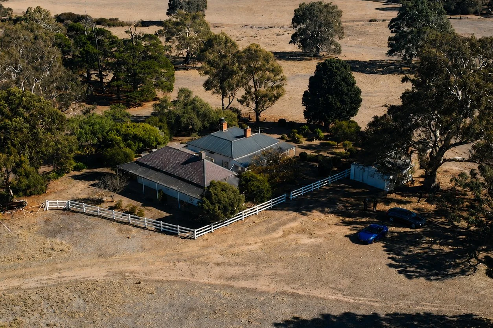

Most property video is made for one audience: the buyer who hasn't bought yet. Film the rooms, show the layout, get it listed, sell the house. Once the property sells, the video's job is considered done and it quietly disappears.
That's a narrow way to think about it — and it misses where most of the long-term value actually sits.
A properly made cinematic property video does three jobs at once. It sells the property. It markets the people who built and sold it. And it becomes something the family who moves in genuinely wants to keep and share.
That third one is the part almost everyone overlooks, and it's the one that keeps generating business long after settlement.
The agent
Sells the lifestyle, attracts better enquiries and wins listing presentations.
The builder
A permanent portfolio piece showing craftsmanship and finish quality.
The family
A keepsake of their home — shared with everyone they know, for years.
For the agent: it sells the lifestyle, not the floor plan
Buyers don't fall in love with dimensions. They fall in love with a feeling — morning light through a kitchen window, the sense of space when you walk into a room, what the land looks like from the air.
Photos show what a property is. Cinematic video shows what it's like. And the numbers back it up.
For agents, this matters commercially in three ways:
- Better quality enquiries. People who've watched a three-minute film arrive at the inspection already emotionally invested.
- Fewer wasted inspections. Buyers who aren't a fit self-select out, which saves everyone's weekend.
- Vendor wins. At listing presentations, the standard of marketing you produce is often what separates you from the agent quoting the same commission.
For premium and acreage properties especially, video isn't a nice extra — it's what justifies the price point. The Ray White acreage tour is a good example of scale that photography alone can't communicate.
For the builder: the finished home is your best advertisement
Builders spend twelve months on a home and then hand over the keys with no record of it.
A cinematic film of a completed build is the single strongest marketing asset a builder can own. It shows craftsmanship — joinery, proportions, finishes, the way light was designed to move through a space — in a way photos flatten.
It works across your website, socials, display homes, tenders and pitches. And unlike a project that gets renovated later, a well-shot film of a home at completion is permanent. See the Pascoe Vale residence for a build documented start to finish.

For the family: it's a keepsake, and that's where the sharing starts
This is the piece most people in the industry underestimate.
Buying or building a home is one of the biggest moments in a family's life. They've saved for it, planned it, stressed about it, waited for it. And when they finally get the keys, the only visual record they usually have is a real estate listing full of photos taken to sell the house to someone else.
A cinematic film changes that. It captures the home the way they'll want to remember it — before the boxes, before the furniture, before life fills it up. For a lot of families, it becomes something they keep permanently.
People share what they're proud of. That's why a film made for a family travels further than an ad ever will.
That film gets sent to parents, grandparents, siblings and group chats, and posted to Instagram and Facebook with a caption about finally getting there. It gets shown at housewarmings. It gets rewatched on anniversaries. Family overseas who'll never visit get to walk through the home properly.
None of that is advertising. It's genuine pride — which is exactly why it travels.
How a keepsake turns into word of mouth
Here's the practical business logic behind the emotional part.
A cinematic property film gets shared by the family into a network of people who are demographically almost identical to them — similar age, similar life stage, similar suburbs, similar plans. Some of them are thinking about building. Some are about to sell. Some have been putting off calling a builder for a year.
They're not seeing an ad. They're seeing a friend's beautiful new home, made by a builder whose name comes up naturally in the conversation that follows: who built it?, who filmed that?
That's word of mouth with a visual attached. Most marketing stops working the moment you stop paying for it. A film that a family loves keeps working on its own.
What makes a property film worth sharing
Not all property video gets shared. Walkthrough footage with a wide lens and background music doesn't. The films that travel tend to have a few things in common:
- Cinematic, not documentary. Considered framing, movement and proper colour grading — it should feel like a film, not a tour.
- Shot in the right light. Golden hour and clean weather do more for a property than any amount of editing.
- Drone context. Aerials establish land, streetscape and setting.
- Emotion over information. Nobody shares a spec list. They share a feeling.
- The right length. Two to three minutes for the hero film, plus short vertical cutdowns for social.
The short-form versions matter more than people expect. A 30-second vertical cut is what actually gets posted to Instagram Stories — and that's usually where the sharing begins.
One film, three returns
The economics are what make this compelling. A single shoot produces a hero film the agent uses to sell the property, a portfolio piece the builder uses to win the next job, a keepsake the family shares with everyone they know, plus short-form cutdowns and a stills library usable across all three.
The cost is shared between people who all benefit. The return keeps compounding long after settlement.
Cinematic property video in Melbourne
Strum Media produces cinematic property and real estate films across Melbourne and Victoria — luxury homes, new builds, acreage and development projects. Drone and ground cinematography, full walkthroughs, photography and short-form social cutdowns.
We work with builders, developers and agents, and we shoot with all three audiences in mind: the buyer who needs convincing, the business that needs marketing, and the family who'll keep the film for years.